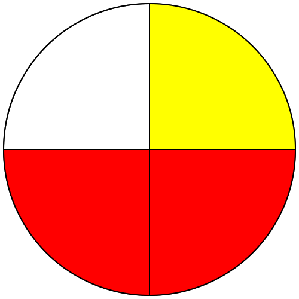

|
Chapitre 15
|
- Fraction - Comparaison, somme et différence
|
Activité Introduction
En utilisant le disque de fraction ci-contre :
-
Colorier en vert $\frac{1}{3}$ du disque. Quelle fraction du disque cela représente-t-il ?
-
Colorier en rouge $\frac{1}{4}$ du disque. Quelle fraction du disque cela représente-t-il ?
-
Quelle est la proportion du disque rempli ?
-
Completer :
$\frac{1}{3}+\frac{1}{4} = \frac{}{12} + \frac{}{12} = \frac{}{12}$
-
Quel règle peut-on définir pour effectuer l'addition de deux fractions ?
Rappels :
Soit a et b deux nombres avec b non nul. Le quotient de a par b peut s'écrire sous la forme $\frac{a}{b}$ cette forme s'appelle écriture fractionnaire.
Si a et b sont des entiers $\frac{a}{b}$ est appelé une fraction.
Remarques :
-
La fraction $\frac{a}{b}$ est le nombre qui multiplié par $b$ est égal à $a$.
-
Dans une fraction $a$ est le numérateur et $b$ le dénominateur.
Un quotient ne change pas lorsque l'on multiplie (ou divise) son numérateur et son dénominateur par un même nombre (non nul).
Soit k$\neq0$ :
$\frac{a}{b}=\frac{a\ \times\ \textcolor{#e53935}{k}}{b\ \times\ \textcolor{#e53935}{k}}$
et
$\frac{a}{b}=\frac{a\ \div\ \textcolor{#e53935}{k}}{b\ \div\ \textcolor{#e53935}{k}}$
Exemples :
$\frac{6}{7}=\frac{6\ \times\ \textcolor{#e53935}{4}}{7\ \times\ \textcolor{#e53935}{4}}=\frac{24}{28}$
$\frac{32}{24}=\frac{32\ \div\ \textcolor{#e53935}{8}}{24\ \div\ \textcolor{#e53935}{8}}=\frac{4}{3}$
Simplifier une fraction, c'est trouver une fraction qui lui est égale, ayant un dénominateur plus petit.
Exemples :
$\frac{15}{40}=\frac{\cancel{5}\times\ 3}{\cancel{5}\times\ 8}=\frac{3}{8}$
$\frac{18}{42}=\frac{\cancel{6}\times\ 3}{\cancel{6}\times\ 7}=\frac{3}{7}$
Comparaison :
Un fraction dont :
- Le numérateur est égale au dénominateur, est égale à 1.
- Le numérateur est inférieur au dénominateur, est inférieur à 1.
- Le numérateur est supérieur au dénominateur, est supérieur à 1.
Exemple :
- $\frac{23}{23}$ = 1
- $7 < 8$ donc $\frac{7}{8}$ < 1
- $19 > 17$ donc $\frac{19}{17}$ > 1
Pour comparer deux fractions, on commence par les mettres au même dénominateur.
Pour comparer deux fractions de même dénominateur, on compare les numérateurs.
Exemple :
- $\frac{8}{9} > \frac{4}{9}$ car $8 > 4$
- $\frac{12}{5} < \frac{16}{5}$ car $12 < 16$
- $\frac{3}{4} > \frac{5}{8}$ car $\frac{3}{4} = \frac{6}{8}$ et $6 > 5$
Addition et soustraction :
Addition et soustraction simple :
Propriété :
Pour effectuer la
somme (ou la
différence) de deux nombres en écriture fractionnaire de même dénominateur :
- On garde le dénominateur commun;
- On additionne (ou on soustrait) les numérateurs.
Exemples :
-
| $\frac{2}{4}$ |
+ |
$\frac{1}{4}$ |
= |
$\frac{2+1}{4}=\frac{3}{4}$ |
 |
+ |
|
= |
 |
-
$\frac{7}{31}+\frac{16}{31}=\frac{7+16}{31}=\frac{23}{31}$
Addition et soustraction quelconque :
Pour effectuer la somme (ou la différence) de deux fractions à dénominateur multiple, il faut tout d'abord les mettre au même dénominateur avant d'utiliser la propriété précédente.
Exemples :